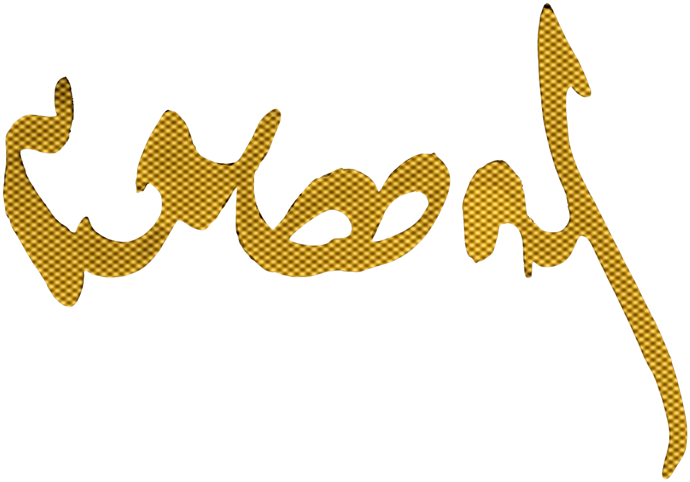

۰۱
هویت
حقیقتِ فرهنگی، آشتیِ ملی و احیای هویت
بازیابی، مستندسازی و احیای هویتِ ملیِ اصیل و میراثهای منطقهای که رژیم سرکوب، بازنویسی یا جرمانگاری کرده است.
پروژه · نمایهٔ میراثِ زدوده
اندیشکدهٔ فرهنگ و هنر گوسانسیاستگذاریِ فرهنگیِ مبتنی بر شواهداندیشکدهٔ فرهنگ و هنر گوسان، زیرساختهای نهادی، اقتصادی و دیجیتالِ اقتصادِ خلاقِ ایرانِ آزاد را — بر پایهٔ داده و شواهد — پژوهش و طراحی میکند.
ما فرهنگ را نه یک تزئین، که یک محرکِ اقتصادِ کلان، ابزارِ قدرتِ نرم و ستونِ ثباتِ ملی میدانیم. گوسان نقشههای نهادی، اقتصادی و دیجیتالِ گذارِ ایران بهسوی آیندهای باز را طراحی میکند.
متنِ کامل را بخوانید ←دستورِ کارِ محوری: عملکردن بهمثابهٔ گنجینهٔ دیجیتالِ سانسورناپذیر، پرورشگاهِ حقوقی و معمارِ اقتصادیِ آیندهٔ فرهنگِ ایران — بر عهده گرفتنِ تمامِ خطر در دیاسپورا، همراه با صیانت از آفرینشگرانِ داخل و گردآوریِ داده از آنان.
بازیابی، مستندسازی و احیای هویتِ ملیِ اصیل و میراثهای منطقهای که رژیم سرکوب، بازنویسی یا جرمانگاری کرده است.
پروژه · نمایهٔ میراثِ زدودهبرپاییِ موانعِ خللناپذیرِ قانونِ اساسی و حقوقی، تا بیانِ خلاق دیگر هرگز به دستِ هیچ مرجعی ابزارِ سرکوب یا موضوعِ نظارتِ پلیسی نشود.
پروژه · آزمایشگاهِ منشورمصونسازیِ کاملِ تأمینِ مالی، مدیریت و راهبریِ فرهنگ از رژیمهای سیاسی — الگویی متخصصمحور و مبتنی بر داوریِ همتایان.
پروژه · کتابخانهٔ حکمرانیتضمینِ امنیتِ مالی، کرامت و حقوقِ کارِ هنرمندانِ مستقل — تا هنر از قماری پرمخاطره به حرفهای پایدار بدل شود.
پروژه · نبضِ هنرمندگذارِ فرهنگ از دستگاهِ تبلیغاتیِ متکی بر یارانهٔ دولتی به موتوری سودآور و خوداتکا که شغل میآفریند و تولیدِ ناخالصِ داخلی را پیش میبرد.
پروژه · مرکزِ رشدِ خلاقبازآفرینیِ چهرهٔ ایران در صحنهٔ جهانی — نشاندنِ تمدنی پویا و ۲۶۰۰ساله، پیشتازِ نوزاییِ مدرن، به جای تصویرِ یک حکومتِ بنیادگرا.
پروژه · نگارخانهٔ گوسانبرچیدنِ انحصارِ فرهنگیِ متمرکز و تهرانمحور و توانمندسازیِ استانهای ایران برای اداره، تأمینِ مالی و پاسداشتِ سرمایههای بومیِ خود.
پروژه · درگاههای منطقهایساختِ زیرساختِ دیجیتالِ امن و پیشرفته برای صیانت از اقتصادِ خلاق در برابرِ نظارتِ دولتیِ امروز و انحصارهای شرکتیِ فردا.
پروژه · توزیعِ تابآورهر هدفِ راهبردی به سکویی عملیاتی بدل میشود. این همان است که هماکنون میسازیم — عرضهشده و میزبانیشده از برونمرز، تا آفرینشگرانِ داخل هیچ سهمی از خطر بر دوش نگیرند. برای هر هدف یک برنامه؛ نخستینِ آنها هماکنون فعال است.
منشورهای حقوقیِ آمادهٔ بهرهبرداری که دستگاههای تبلیغاتیِ دولتی را به نهادهایی مستقل و در خدمتِ منافعِ عمومی بدل میکنند — آماده از روزِ نخست.
قوانینِ مالیاتی، چارچوبهای حقِ مؤلف و پیمانهای همتولید که طبقهٔ خلاقِ زیرزمینی و دیاسپورا را وارد بازاری میکند که تولیدِ ناخالصِ داخلی را پیش میبرد.
سیاستگذاری برای عدالتِ الگوریتمیِ حقِ مؤلف، صیانت از داراییهای دیجیتال و فناوریِ ثبت و حفاظت از میراثِ کالبدی در دورانِ گذار.
ما هر واحدِ عمومیِ هزینهشده برای فرهنگ را در برابرِ شاخصهای اقتصادیِ بلادرنگ نقشهبرداری میکنیم — و آشکار میکنیم کدام محلهها بیابانِ فرهنگیاند و کدام، موتورِ اقتصادی. متنباز، تعاملی، و به زبانی که وزارتخانههای دارایی واقعاً به کار میبرند.
«وقتی فرهنگ را اندازه میگیریم، بودجه در پیِ آن میآید.»
«منشورِ عمومی یعنی رسانه از روزِ نخست به مردم تعلق دارد.»
«هر بنای ثبتنشده، حافظهای است که میتواند پاک شود.»
با گوسان در تماس باشید.